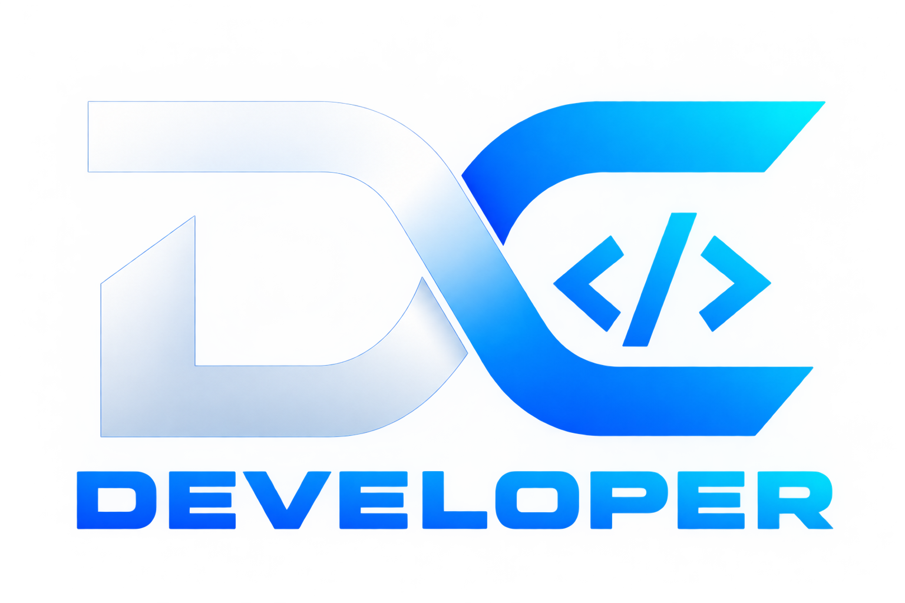

Desenvolvimento
Construindo soluções para a web.

Baixar currículoTransformo ideias em experiências digitais modernas, criando sites e aplicações com foco em design, desempenho e uma ótima experiência para o usuário.
Minha experiência em TI é a base para minha evolução no desenvolvimento de soluções digitais modernas, funcionais e pensadas para pessoas.
Atuo na área de tecnologia da informação desde dezembro de 2016, com experiência em infraestrutura, backup e monitoramento de ambientes de TI.
Essa trajetória me proporcionou uma visão prática sobre estabilidade, organização, análise de problemas e a importância de soluções confiáveis. Hoje, levo essa bagagem para minha evolução no desenvolvimento de sites e aplicações web.
Meu objetivo é transformar ideias em experiências digitais intuitivas, combinando lógica, criatividade e atenção aos detalhes em cada projeto.
Construindo soluções para a web.
Uma base técnica construída na prática.